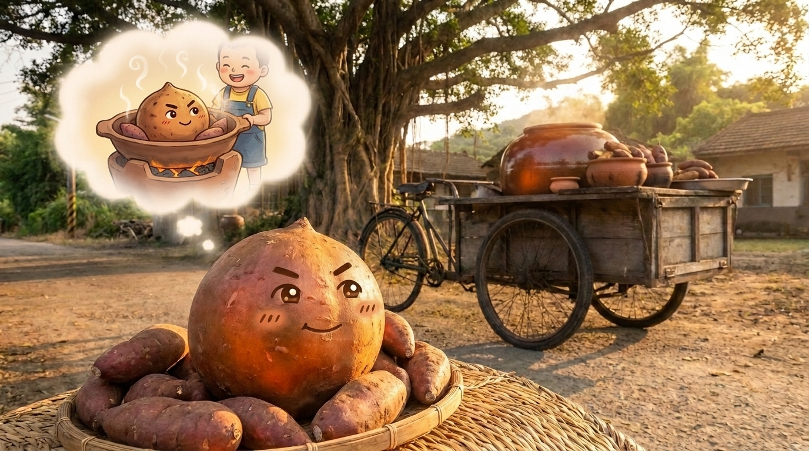
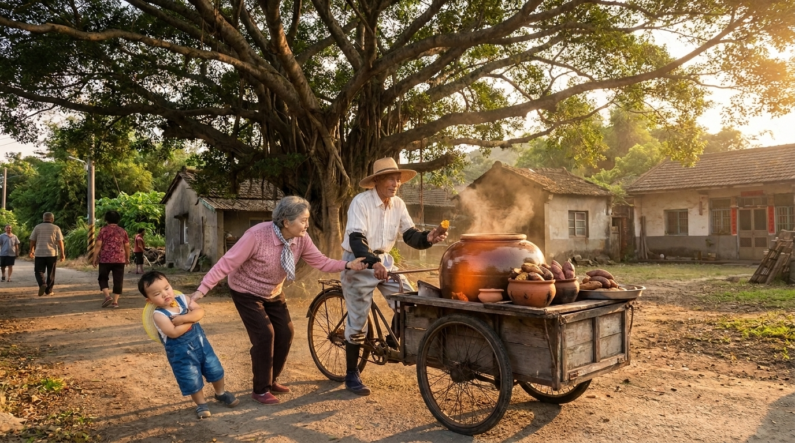
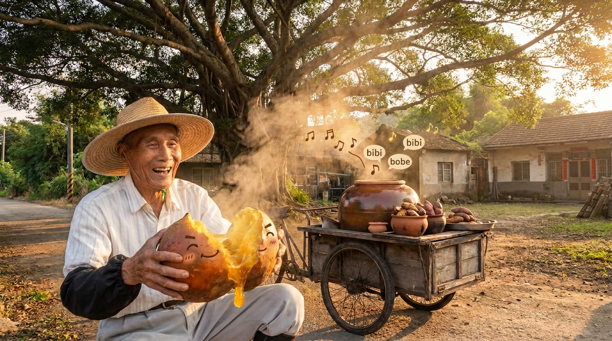
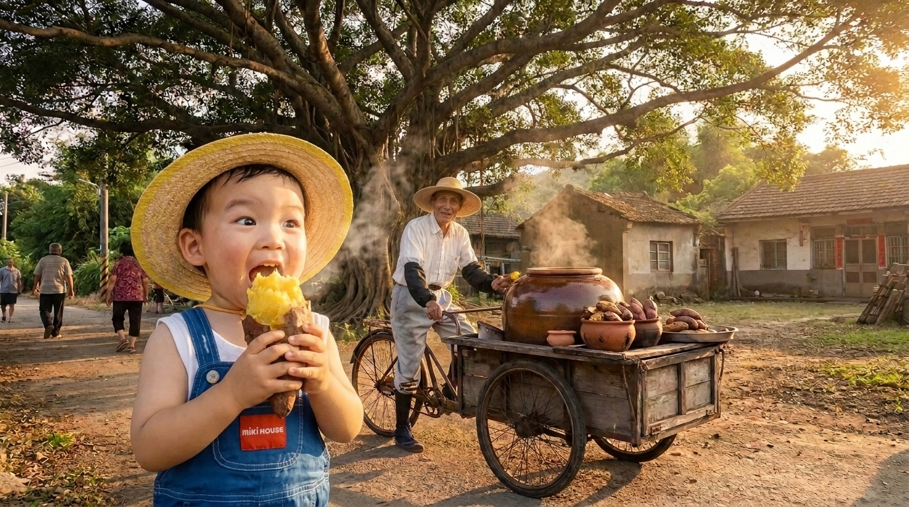
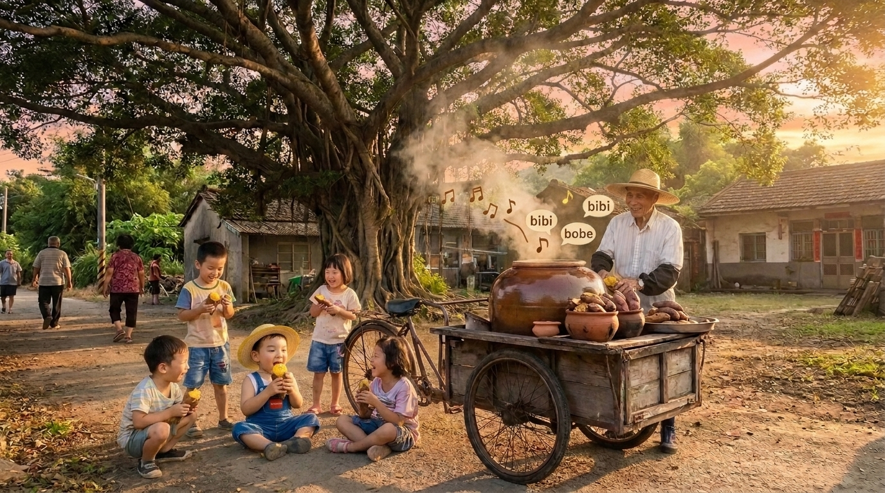

阿樹公的古早味地瓜攤
在鄉下村落的大榕樹下，阿樹公推著一部舊舊的三輪車賣烤地瓜。每到傍晚，熱騰騰的甕烤地瓜一出爐，濃濃的焦糖甜香就會飄滿整條馬路。
一顆不肯發芽的地瓜，如何變成村落裡最受歡迎的快樂泉源？
在鄉下村落的大榕樹下，阿樹公推著一部舊舊的三輪車賣烤地瓜。每到傍晚，熱騰騰的甕烤地瓜一出爐，濃濃的焦糖甜香就會飄滿整條馬路。

地瓜堆裡有一顆特別圓潤的「阿福」。阿福有個小秘密：他不想被拿去煮地瓜湯，也不想變成地瓜球，他最大的夢想，就是被烤得香香軟軟，給最懂品嚐的人吃。

隔壁村落的阿寶最討厭吃地瓜，每天吃飯都讓媽媽頭痛。這天阿寶被媽媽拉到攤子前，阿寶嘟著嘴，死活不肯接過阿樹公遞過來的地瓜。

阿樹公笑著把阿福撕開，熱氣伴隨微焦的蜜糖汁流了出來，發出「嗶嗶啵啵」的輕響。阿樹公說：「你聽，這顆地瓜在唱歌，說他把自己烤得像麥芽糖一樣甜了喔！」

阿寶好奇地湊過去聞了聞，忍不住張嘴咬了一大口。軟糯綿密的金黃色肉質在舌尖融化，比冰淇淋還香甜！阿寶眼睛一亮，三兩下就把整顆阿福吃得乾乾淨淨。

從那天起，阿寶成了地瓜攤的常客，每天放學都跑來榕樹下聽地瓜「唱歌」。夕陽下，三輪車冒著白煙，村落裡滿是孩子們滿足的笑聲與甜蜜的香氣。